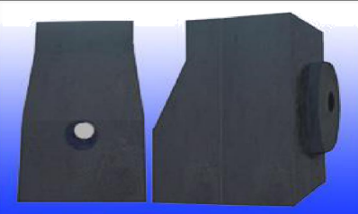
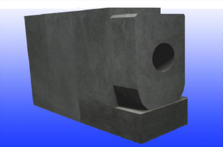
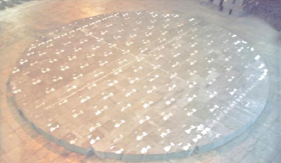
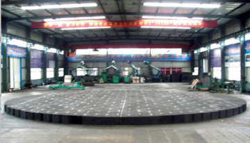
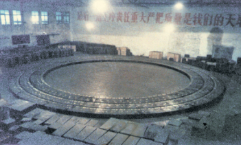
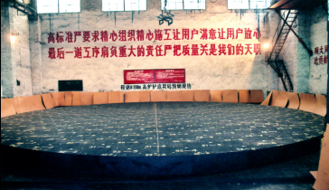

Preassembly of carbon resistant materials for large blast furnaces

The semi graphite carbon carbide brick is used for single hole iron mouth brick, and it is used in E # 604m³ blast furnace of Tata iron and Steel Company of India（2006)

Super microporous carbon brick combined with drilling taphole brick is used in 3400m³ blast furnace of Jinan Iron and steel company（2009)

Preassembly site of semi graphite carbon silicon carbide roasted carbon block for bottom of 2500m³ blast furnace in Shanghai Baosteel Group No.1 plant（1998)
The blast furnace has been in safe operation for 11 years and is still in operation.

The preassembly site of 2500m³ furnace bottom of Nanjing Iron and Steel Company of Jiangsu Province is prepared by semi graphite baking carbon block（ 2005)

Semi graphitized self baking carbon block for hearth of 7 × 2580m³ blast furnace in Liaoning Anshan Iron and Steel Co., Ltd（ 1992-2003)
The blast furnace has operated safely for 11 years and 4 months. This is the first blast furnace in China to adopt self baking carbon block ceramic masonry composite lining technology.

Semi graphitized self baking carbon block for bottom of 10 × 2580m³ blast furnace in Liaoning Anshan Iron and Steel Co., Ltd（ 1995-2008)
The blast furnace has been in safe operation for 13 years and 8 months from 1995 to 2008. The iron production per cubic meter of capacity of the first generation blast furnace is 10800 tons. In October 2008, affected by the financial crisis, the furnace was shut down due to limited production, and the furnace lining was still in safe operation before shutdown.